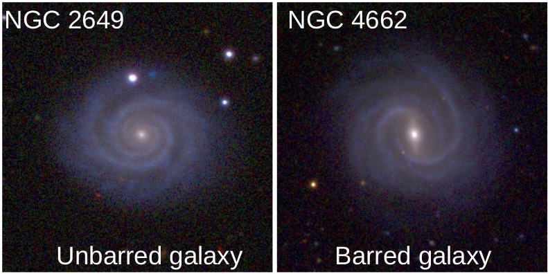
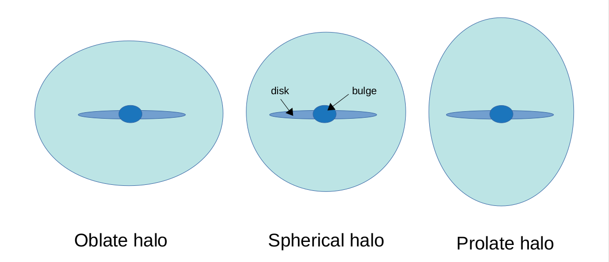
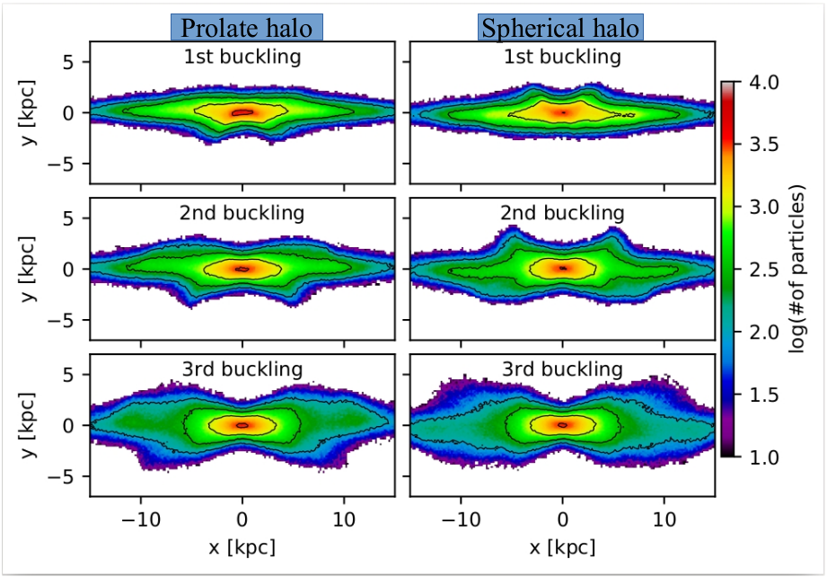

Bar Buckling and Boxy/Peanut Bulges as the Tracer of Dark Matter Halo Shape
Galaxies reside in the deep potential of invisible matter called dark matter. Their dynamics is significantly affected by the distribution of dark matter around them. Distribution of dark matter around galaxies is usually known as dark matter halo. Most of the previous studies of galaxies assumed spherical dark matter halos. But, cosmological simulations of structure formation suggest that the dark matter halo can vary in shape. It can also have non-spherical shape (e.g. oblate and prolate) which can significantly influence the evolution of the galaxy. In this study, Astronomer from IIA, Bangalore and SJTU, China have studied the effect of non-spherical dark matter halos on the buckling of the bars and formation of boxy/peanut shape bulges. They perfomed a set of numerical simulation for varying dark matter halo shape and traced the formation of bars and boxy/peanut shape bulges.
If you look at the clear night sky, you may find a white bright band stretching from north to south in the sky. It is nothing but our home galaxy, the Milky Way. There are trillions of galaxies in our observable Universe. Galaxies are gravitationally bound systems of stars, gas, dust, and invisible matter called dark matter. Galaxies come in different shapes and sizes ranging from spherical - like a ball to disk - like a round plate. Since most of the disk galaxies have spiral arms, they are also called spiral galaxies. Depending on the presence of a bar, a spiral galaxy could be a barred spiral or unbarred spiral. Disk galaxies usually possess a dense collection of stars in their centres which is termed as the bulge. Bulges can range from nearly spherical to as flat as the disk of galaxies. Our Milky way has a boxy/peanut shape flat bulge which is supposed to have formed from the thickening of the bar.

Figure 1: Example of unbarred and barred galaxies. Image source:NED .
The matter we can see in a galaxy is far less than its actual matter content. More than 80% of the total galaxy mass is invisible to us. Only the motion of the stars or gas in the galaxy shows the presence of dark matter. This invisible matter is commonly referred to as dark matter. Due to the presence of an enormous amount of dark matter in the galaxy, the dynamics of the stars is remarkably affected by the distribution of the dark matter. In the past, there have been several detailed studies of the galaxies assuming the spherical distribution of dark matter in the galaxies. There are very limited works that consider the non-spherical distribution of dark matter for the study of galaxies. In the present paper, Ankit Kumar and the team have investigated the effect of non-spherical dark matter distribution on the bar buckling and the formation of boxy/peanut flat bulge like that seen in our Galaxy. Bar buckling is a bar thickening mechanism where the bar suddenly bends out of the disk of the galaxy. Bar buckling can be simply understood using a practical example of a beam or pillar. Say, there is a vertically standing beam and you start increasing the load on it. Then at some point, it will suddenly bend somewhere in the middle (or may collapse). This sudden change is called the buckling of the beam.

Figure 2: Examples of oblate, spherical, and prolate dark matter halos in a disk galaxy. Image source: Author.
Authors have used the supercomputing facility to generate mock realistic disk galaxies and to evolve them in time. The distribution of dark matter in the galaxies ranges from oblate to prolate including spherical one. Oblate distribution (or oblate halo) looks like the shape formed on squeezing a sphere from its top and bottom whereas prolate distribution (or prolate halo) is similar to the shape formed on stretching a sphere from its top and bottom. To trace the formation and evolution of the bar and buckling events, they used Fourier analysis and found that the galaxies in prolate halos form bar earlier than the galaxies in oblate halos. Also, the bar in prolate halos buckles before the bar in the oblate halos. Fourier analysis is the method to decompose any general function or structure into simple trigonometric functions or structures with definite frequencies (see this article for Fourier series). Buckling events are very rarely observed. To date, there are only 8 confirmed galaxies that are currently going through the buckling events. In this study, Ankit Kumar and the team found three distinct buckling events for the bar in the prolate halo. It is the first time where more than two buckling events in a bar have been detected in any study. The total duration of buckling is longer for the bar in the prolate halo. The rarity of buckling in observations and longer duration buckling in the prolate halos lead authors to conclude that most of the dark matter halos could be oblate and spherical in shape.

A clear buckling of the iso-density contour can be seen in the outer bar of the prolate halo during the 3rd buckling event. It also shows the formation and growth of peanut shape bulge after bar buckling. Image source: Kumar et. al. 2021. .
Each buckling event makes the bar thick in size. First buckling thickens the innermost region of the bar while the succeeding bucklings thicken the outer regions of the bar. As a result of these thickening boxy/peanut shape flat bulge forms. Since the bar in the prolate halo shows more buckling events as compared to the oblate halo, the bar in prolate halo thickens the most and forms the most thicker boxy/peanut shape bulge.
Original paper: The effect of dark matter halo shape on bar buckling and boxy/peanut bulges
First Author: Ankit Kumar
Co-authors: Mousumi Das, and Sandeep Kumar Kataria
First author’s Institution: Indian Institute of Astrophysics, Bengaluru, Karnataka, India – 560034; Indian Institute of Science, Bengaluru, Karnataka, India – 560012.
Related articles
- What makes radio-quiet AGN radio-quiet? A polarization perspective
- Star-forming S0 Galaxies in SDSS-MaNGA: fading spirals or rejuvenated S0s?
- Bending of Cosmic fountains, giving birth to a peculiar X-shaped galaxy